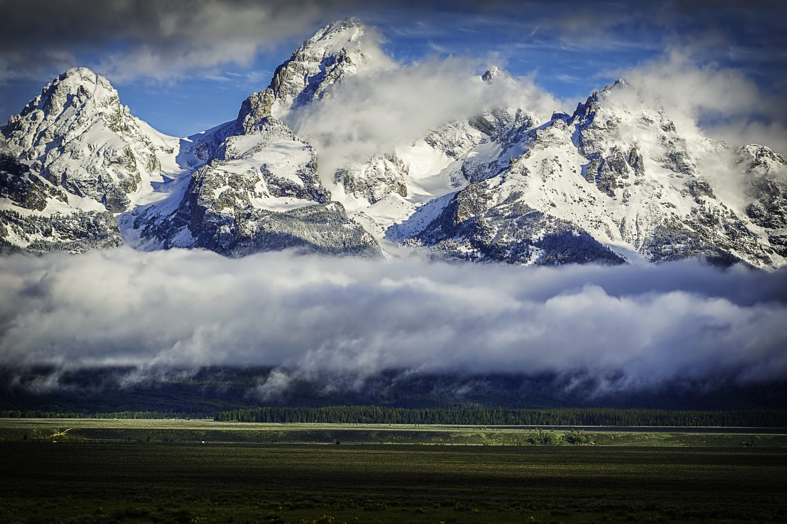
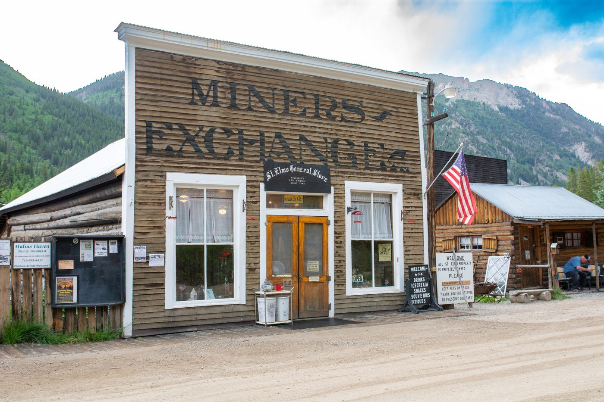
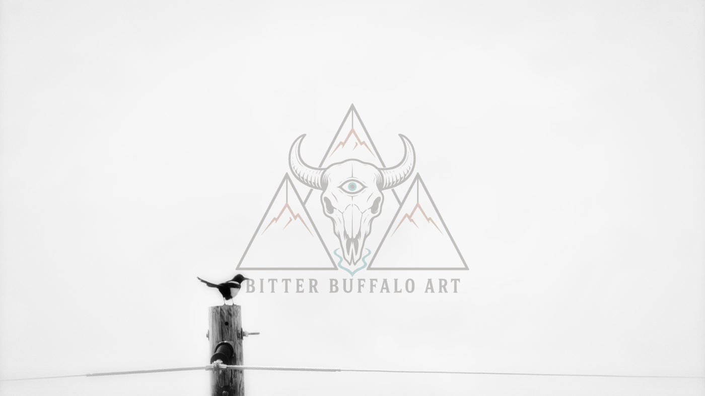
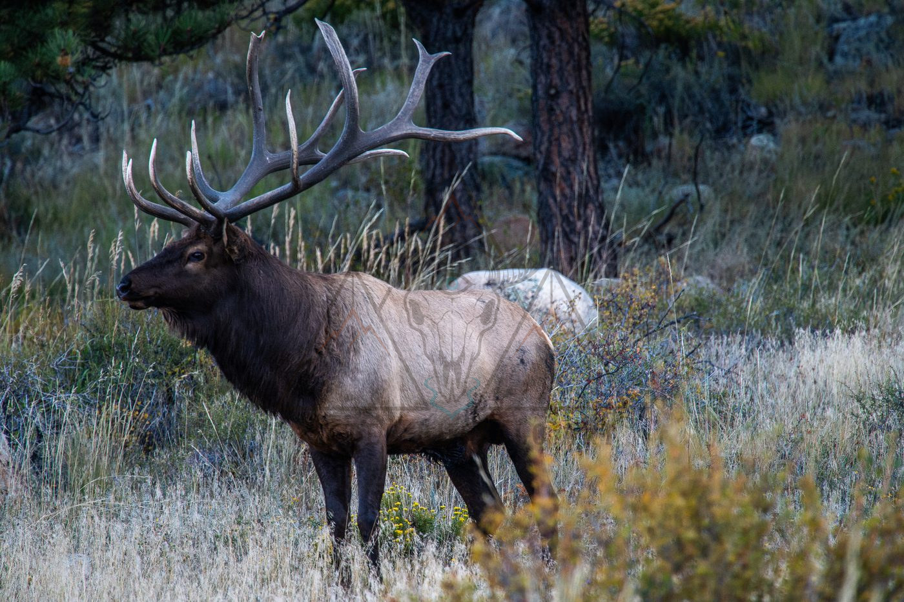
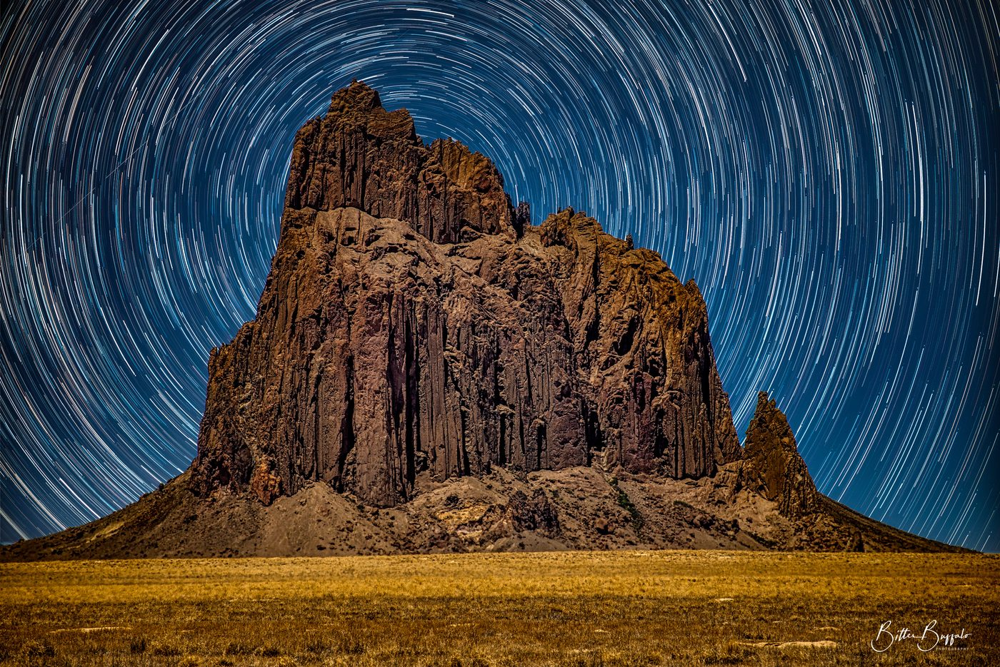
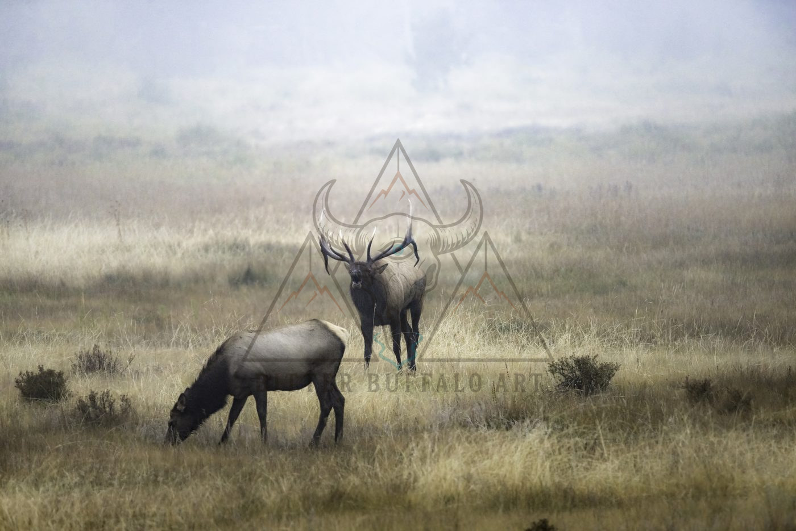
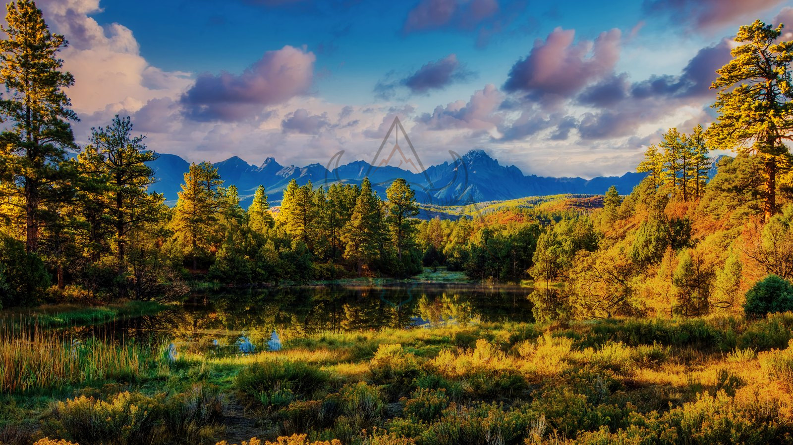
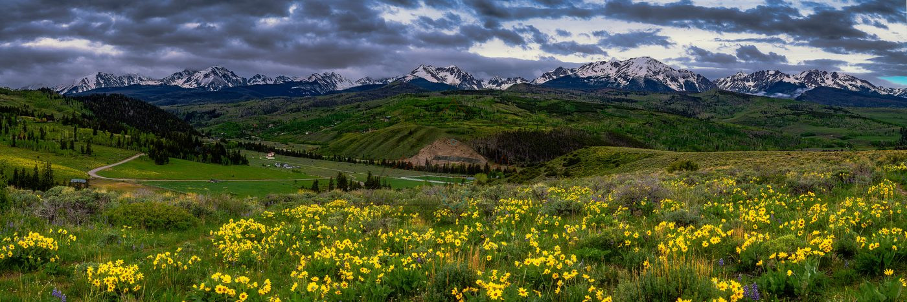
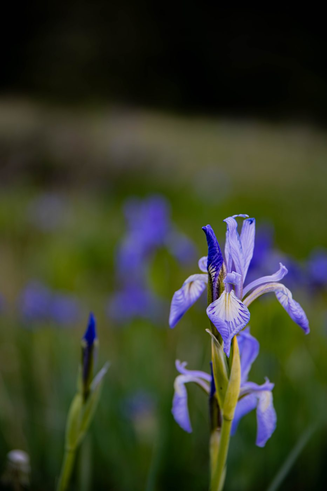
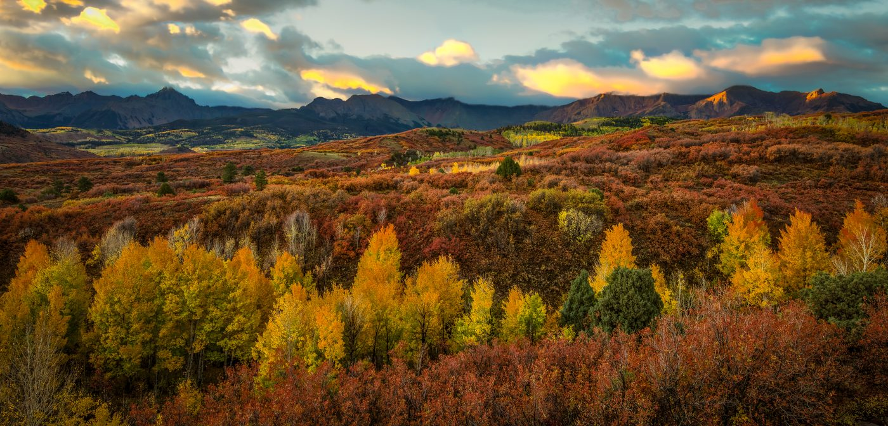

Fine Art Photography
Photography Portfolio
Landscapes, wildlife, and quiet moments from Colorado and the Southwest. Begin with Maroon Bells Reflection and explore the collection below. Photography print listings will be linked here as they become available on Etsy.











Print formats (when published)
- Premium wood-stretched canvas — 1.5″ gallery wrap with mirrored edges where geometry permits
- Premium wood floating-frame canvas — 1.5″ wrap with solid-wood floating frame
- Traditional photographic prints (luster / glossy)
- Archival giclée matte and premium cotton rag
- Aluminum metal prints
- Acrylic face-mount — future offering (not currently available for purchase)
Check each live Etsy listing for available sizes, materials, and prices. Unpublished combinations are not offered for purchase.